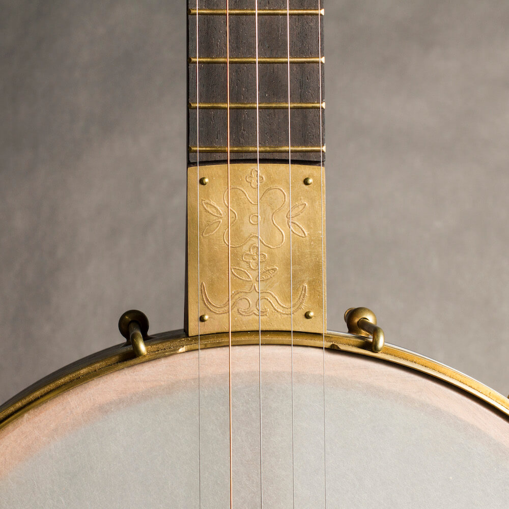
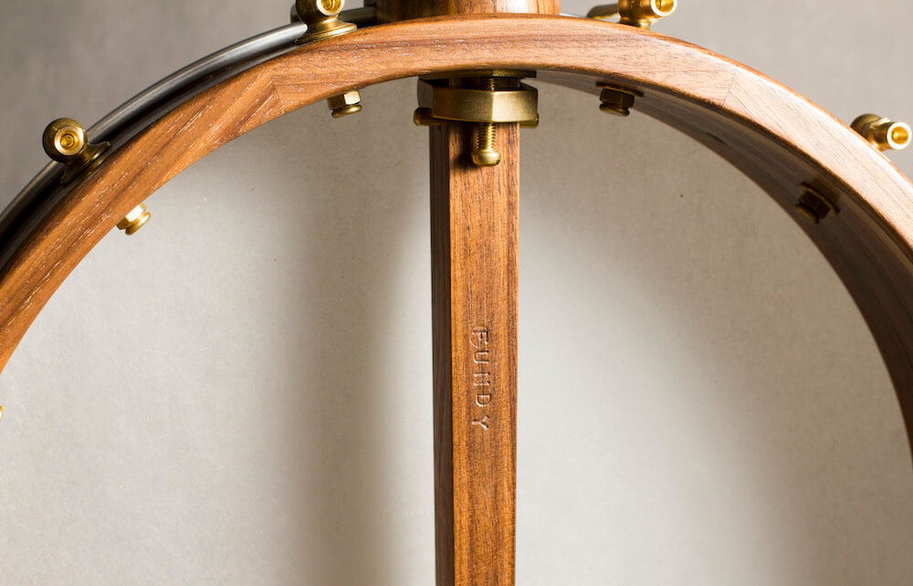
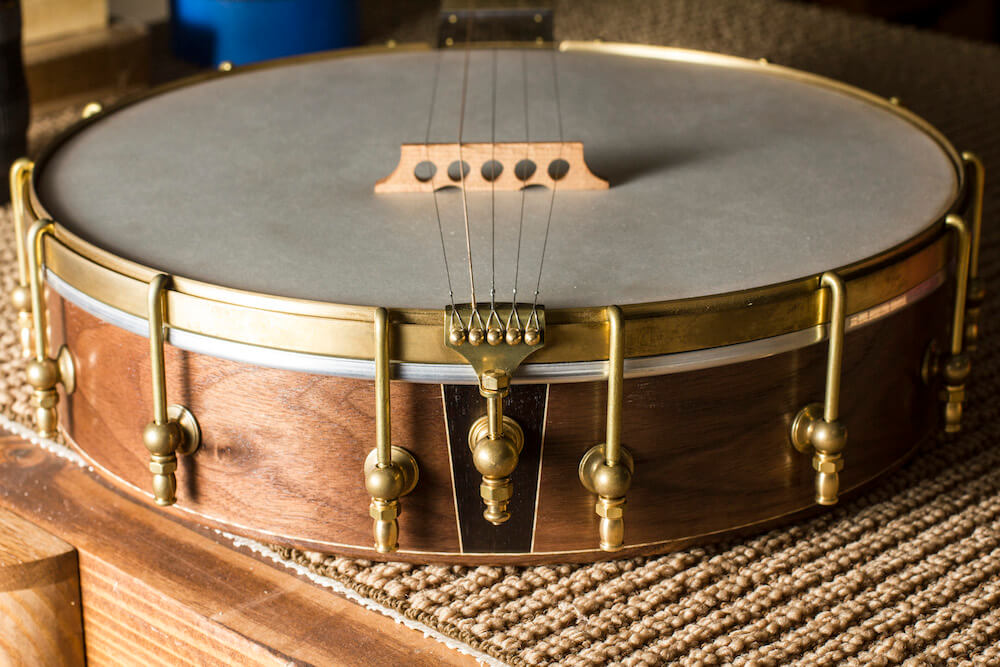
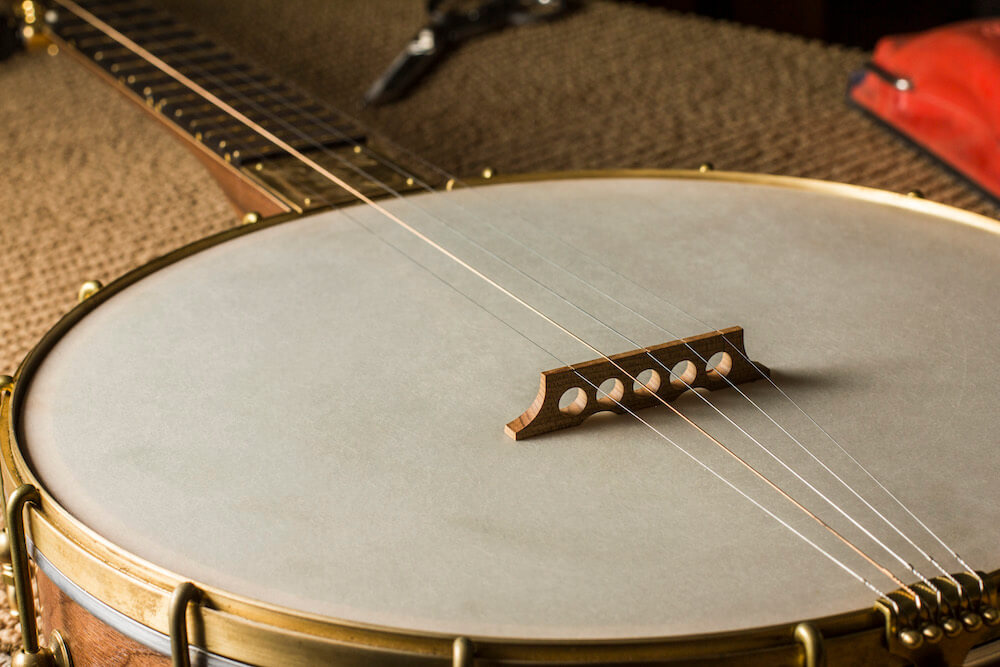
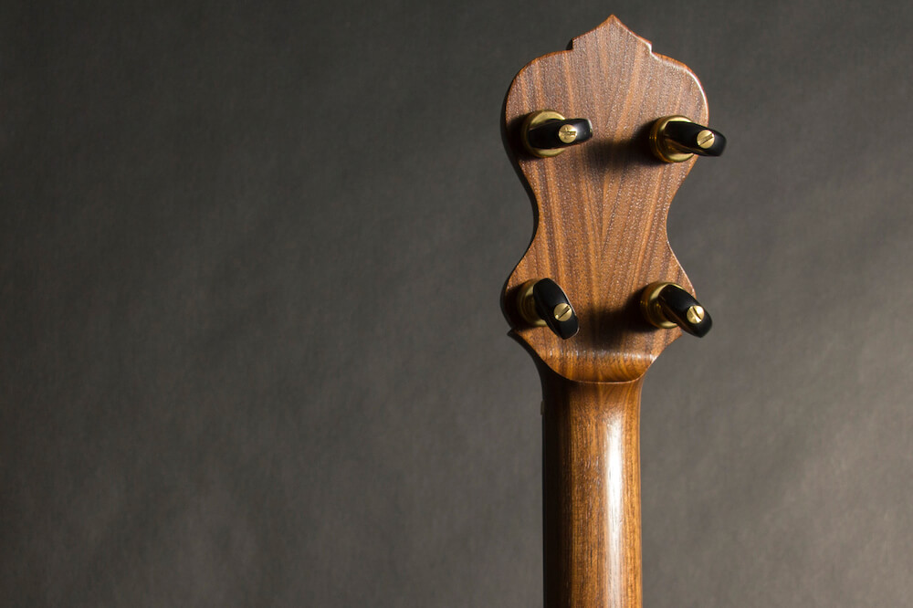

A standard open-back banjo built for old-time and clawhammer playing — the anchor of the Fundy lineup.
The Tidal is designed around a 25.5″ scale length and offered with either an 11″ or 12″ rim to suit different tonal preferences. The 11″ is lighter and more focused; the 12″ opens up the low end and carries more room in the tone. Both are built to the same standard.
The design prioritizes balance, responsiveness, and comfort across the full range of the neck. Construction is standardized enough to be repeatable and consistent, without the compromises that often come with production instruments. Every Tidal is set up with careful attention to neck geometry, string height, and playability before it leaves the shop.
It is intended as a reliable, workmanlike instrument — one that gets out of the way and lets you play.
Standard configuration.
A premium configuration with upgraded hardware and materials.
Built in small batches. Contact for current availability and wait time.






